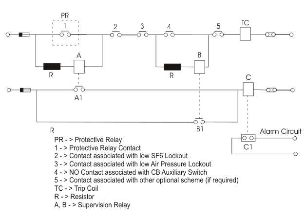

There are different contacts connected in series along a trip circuit of a electrical circuit breaker. There must be some situation when the circuit breaker should not trip even a faulty electric current passes through its power contacts. Such situations are low gas pressure in SF6 circuit breaker, low air pressure in pneumatic operated circuit breaker etc. In this situation the trip coil of the CB must not be energized to trip the CB. So there must be NO contacts associated with gas pressure and air pressure relays, connected in series with breaker trip coil. Another scheme of trip coil is that it should not be re energized once the circuit breaker is open. That is done by providing one NO contact of breaker auxiliary switch in series with trip coil. In addition to that the trip circuit of a CB has to pass through considerable numbers of intermediate terminal contacts in relay, control panel and circuit breaker kiosk. So if any of the intermediate contacts is detached, the circuit breaker fails to trip. Not only that, if dc supply to the trip circuit fails, the CB will not trip.
To overcome this abnormal situation, trip circuit supervision becomes very necessary. The figure below shows the simplest form of trip circuit healthy scheme. Here one series combination of one lamp, one push bottom and one resistor is connected across the protective relay contact as shown. In healthy situation all the contacts except protective relay contact are in close position. Now if push bottom (PB) is pressed, the trip circuit supervision network is completed and lamp glows indicating that the breaker is ready for tripping.
The above scheme is for supervision while circuit breaker is closed. This scheme is called post close supervision.
There is another supervision scheme which is called pre and post close supervision. This trip circuit supervision scheme is also quite simple. The only difference is that here in this scheme, one NC contact of same auxiliary switch is connected across the auxiliary NO contact of the trip circuit. The auxiliary NO contact is closed when CB is closed and auxiliary NC contact is closed when CB is open and vice versa. Hence, as shown in the figure below when the circuit breaker is closed the trip circuit supervision network is completed via auxiliary NO contact but when the circuit breaker is open the same supervision network is completed via NC contact. The resistor is used series with the lamp for preventing unwanted tripping of circuit breaker due to internal short circuit caused by failure of the lamp.

Trip Circuit Supervision
So far whatever we have discussed it is only for local controlled installation but for a distance control installation, relay system is necessary. The figure below shows the trip circuit supervision scheme wherever a remote signal is required.

Trip Circuit Supervision
When trip circuit is healthy and circuit breaker is closed, relay A is energized which closes the NO contact A1 and hence relay C is energized. Energized relay C keeps NC contact in open position. Now if the circuit breaker is open, relay B is energized which closes No contact B1 hence relay C is energized. As C is energized, it keeps the NC contact C1 in open position. While CB is closed, if there is any discontinuity in the trip circuit relay A is de-energized which opens contact A1 and consequently relay C is de-energized and which make the NC contact C1 in close position and hence alarm circuit is actuated. Trip circuit supervision is experienced by relay B with the circuit breaker is open in a similar manner as relay A with the circuit breaker is closed. Relays A and C are time-delayed by copper slugs to prevent spurious alarms during tripping or closing operations. The resistors are mounted separately from the relays and their values are chosen such that if any one component is inadvertently short-circuited, a tripping operation will not take place.
The alarm circuit supply should be separated from main trip supply so that the alarm can be actuated even the trip supply is fail.
 by
by